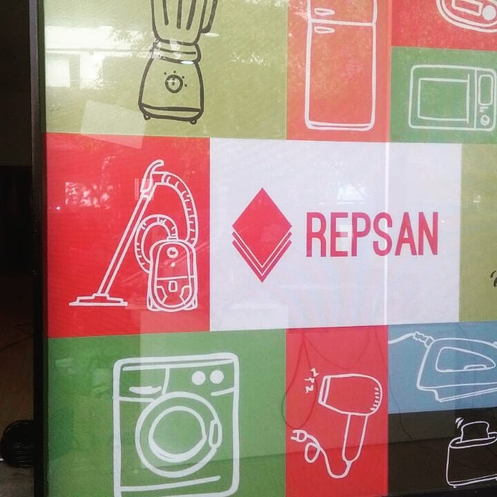

Los integrantes de Repsan tuvieron la oportunidad de desarrollar su propio negocio gracias a vos, con cada producto que comprás, pueden seguir siendo parte de la economía activa. En una primera instancia, las y los reparadores fueron parte de un programa de formación de más de 400 horas de duración, dictado por la empresa Newsan, donde adquirieron las habilidades necesarias para reparar electrodomésticos y desarrollar su propio negocio. Luego de ello, Newsan invirtió en equipamiento técnico, espacios físicos y asesoría técnica y legal, para que cada reparador y reparadora pueda conformar su propia Unidad Productiva. Las Unidades Productivas son centros de reparación conformados por personas de todo tipo y clase
